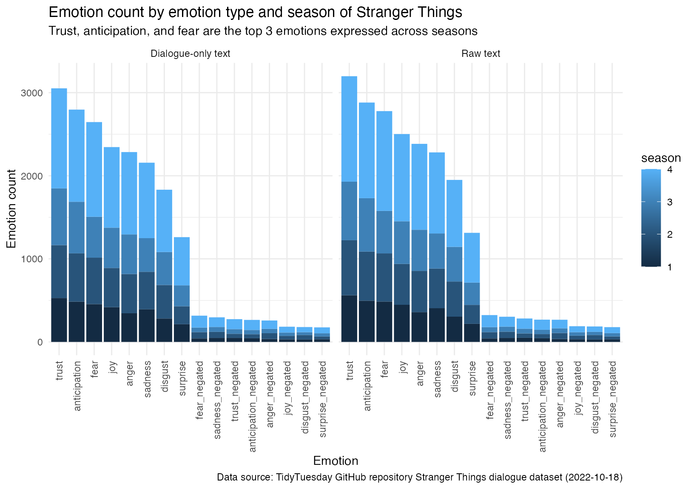
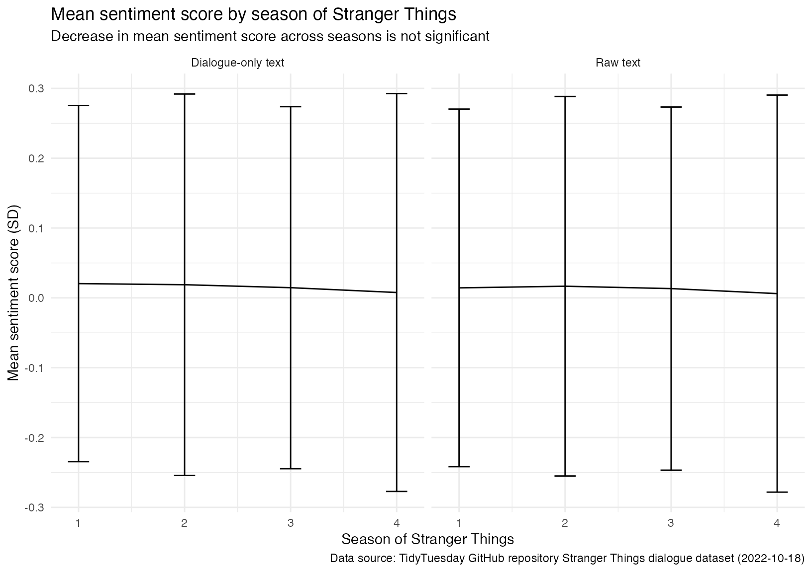

Vignette
Helen Guo (vignette author); Tyler Rinker (package author)
2023-12-12
Source:vignettes/Vignette.Rmd
Vignette.RmdSetup
Setup:
# Clear workspace
rm(list=ls())
# Load packages
library(here)
library(dplyr)
library(tidyr)
library(ggplot2)
library(sentimentr)
library(purrr)Questions
Via sentiment analysis by sentence, how does the mood/emotion of dialogue in the television show Stranger Things change throughout the seasons? Is it generally positive or negative? What if we also take into account the sentiments conveyed by parenthetical details in the raw text?
In both scenarios, make sure to take into account how valence shifters (“not”, “barely”, “but”, etc.) affect sentence meaning using the sentimentr package.
Data source(s)
We use the TidyTuesday GitHub repo on dialogue in Stranger Things from 8flix.com: https://github.com/rfordatascience/tidytuesday/tree/master/data/2022/2022-10-18
We download the stranger_things_all_dialogue data set, which contain information on season, episode, and dialogue per line spoken in the show.
Data dictionary
The data dictionary for the measles data set can be found here: https://github.com/rfordatascience/tidytuesday/tree/master/data/2022/2022-10-18#data-dictionary
Load and clean data
# Read in data - Uncomment all code below when knitting or running code for the first time
# tuesdata <- tidytuesdayR::tt_load('2022-10-18')
# dialogue <- tuesdata$stranger_things_all_dialogue
#
# Tests if a directory named "data" exists locally using 'here'.
# If not, create "data" directory
# if (!dir.exists(here("data"))) {
# dir.create(here("data"))}
#
# Saves data only once
# if (!file.exists(here("data", "dialogue.RDS"))) {
# saveRDS(dialogue, file = here("data", "dialogue.RDS"))}
# Read in the .RDS dataset locally from our computing environment
dialogue <- readRDS(here("data", "dialogue.RDS"))
# Clean data
dialogue_clean<- dialogue %>%
rename(dialogue_text=dialogue) %>%
# Rename dialogue to dialogue_text to avoid confusion
# Keep only relevant columns
select(season, episode, line, raw_text, dialogue_text) %>%
# Remove NA and blank dialogue lines
filter(!is.na(dialogue_text) & dialogue_text != " ")
# View clean_data
glimpse(dialogue_clean)## Rows: 26,041
## Columns: 5
## $ season <dbl> 1, 1, 1, 1, 1, 1, 1, 1, 1, 1, 1, 1, 1, 1, 1, 1, 1, 1, 1,…
## $ episode <dbl> 1, 1, 1, 1, 1, 1, 1, 1, 1, 1, 1, 1, 1, 1, 1, 1, 1, 1, 1,…
## $ line <dbl> 9, 10, 11, 12, 13, 14, 15, 16, 18, 19, 20, 21, 22, 23, 2…
## $ raw_text <chr> "[Mike] Something is coming. Something hungry for blood.…
## $ dialogue_text <chr> "Something is coming. Something hungry for blood.", "A s…Sentiment analysis with valence shifters
We first split lines of TV show script into individual sentences using get_sentences function from the sentimentr package, and then apply the function to the dialogue-only text and the raw text (which includes parenthetical details in the show script).
# Two different sets of analysis: one dialogue-only text and one for raw text
text_list <- list(dialogue_clean$dialogue_text,dialogue_clean$raw_text)
# Function to split lines of TV show script into individual sentences
split_sentences <- function(text) {
output <- dialogue_clean %>%
mutate(sentences = sentimentr::get_sentences(text))
return(output)}
# Call split_sentences for each set of analysis
dialogue_split <- map(text_list, split_sentences)
# Store both sets of text with sentences split
input_list <- list(pluck(dialogue_split,1), pluck(dialogue_split,2))Next we will conduct emotion count analysis and sentiment score analysis on the sentence-level for both sets of text using the emotion_by and sentiment functions from the sentimentr package:
# Function to count emotions conveyed on sentence level
emotion_analysis <- function(input) {
result <- with(
input,
emotion_by(
get_sentences(input$sentences),
list(season)))
result_clean <- result %>%
arrange(season, desc(emotion_count))%>%
select(season,emotion_type, emotion_count)
return (result_clean)}
# Call emotions_analysis for each set of analysis
emotion_results <- map_df(input_list, emotion_analysis, .id="text_source")
# Function to get sentiment score on sentence level
sentiment_analysis <- function(input) {
unnested_input <- input %>%
unnest(sentences)
score <- sentiment(input$sentences)
result <- bind_cols(unnested_input, score)
return(result)}
# Call sentiment_analysis for each set of analysis
sentiment_results <- map(input_list,sentiment_analysis)
# Store both sets of results from sentiment analysis
input_list <- list(pluck(sentiment_results,1),pluck(sentiment_results,2))
# Function to summarize mean and sd of sentiment scores
get_means <- function(input) {
result <- input %>%
group_by(season) %>%
summarise(
mean_score = mean(sentiment),
sd_score = sd(sentiment))
return(result)}
# Call get_means for each set of analysis
mean_sentiment_results <- map_df(input_list, get_means, .id = "text_source")Data visualization
For each set of analysis (dialogue-only text and raw text [which includes parenthetical details]), we will first create a bar plot to display the breakdown of emotion counts by emotion type and season of Stranger things:
# Make faceted bar plot
ggplot(emotion_results,
aes(x = reorder(emotion_type, -emotion_count), y = emotion_count, fill = season)) +
geom_bar(stat = "identity") +
labs(x = "Emotion",
y = "Emotion count",
title = "Emotion count by emotion type and season of Stranger Things",
caption=
"Data source: TidyTuesday GitHub repository Stranger Things dialogue dataset (2022-10-18)",
subtitle= "Trust, anticipation, and fear are the top 3 emotions expressed across seasons") +
theme_minimal()+
theme(axis.text.x = element_text(angle = 90, vjust = 0.5, hjust = 1)) +
facet_grid(. ~ text_source,
labeller = labeller(text_source= c("1" = "Dialogue-only text", "2" = "Raw text"))) 
Next we will make a line plot to show how mean sentiment score changes across seasons:
# Make faceted line plot
ggplot(mean_sentiment_results, aes(x = season, y = mean_score)) +
geom_line() +
labs(x = "Season of Stranger Things",
y = "Mean sentiment score",
title = "Mean sentiment score by season of Stranger Things",
caption=
"Data source: TidyTuesday GitHub repository Stranger Things dialogue dataset (2022-10-18)",
subtitle="Mean sentiment score decreased across seasons") +
theme_minimal()+
facet_grid(. ~ text_source,
labeller = labeller(text_source= c("1" = "Dialogue-only text", "2" = "Raw text"))) 
Finally let’s explore how our interpretation of the line plot changes when standard error bars are shown:
# Make faceted line plot with SD bars
ggplot(mean_sentiment_results, aes(x = season, y = mean_score)) +
geom_line() +
geom_errorbar(aes(ymin = mean_score - sd_score, ymax = mean_score + sd_score), width=0.2) +
labs(x = "Season of Stranger Things",
y = "Mean sentiment score (SD)",
title = "Mean sentiment score by season of Stranger Things",
caption=
"Data source: TidyTuesday GitHub repository Stranger Things dialogue dataset (2022-10-18)",
subtitle="Decrease in mean sentiment score across seasons is not significant") +
theme_minimal()+
facet_grid(. ~ text_source,
labeller = labeller(text_source= c("1" = "Dialogue-only text", "2" = "Raw text"))) 
Summary
From both the dialogue-only text and raw text analyses, we can see that the seasons of Stranger Things have a higher emotion count as the show progresses, but the primary emotions and proportions of emotions conveyed remains similar across seasons. Although mean sentiment score decreases slightly across seasons in both sets of analyses, this decrease is not significant.